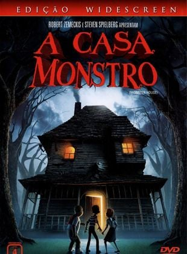

Direção:
Gil KenanElenco:
Mitchel Musso, Sam Lerner, Spencer LockeGênero:
TerrorClassificação:
12 anosSinopse:
DJ Walters (Mitchel Musso) é um garoto de 12 anos que acredita que há algo de estranho na casa do velho Nebbercracker (Steve Buscemi), localizada do outro lado da rua. Tudo que passa perto da casa simplesmente desaparece, incluindo triciclos, brinquedos e animais de estimação. Na véspera do Dia das Bruxas, DJ e seu amigo Chowder (Sam Lester) deixam que a bola de basquete com a qual estão jogando caia no terreno de Nebbercracker, sumindo misteriosamente. Logo em seguida a casa tenta devorar Jenny (Spencer Locke), uma amiga de ambos, que é salva do ataque. Eles tentam avisar a todos do perigo que é a casa, mas ninguém acredita neles. O trio recorre a Skull (Jon Heder), um preparador de pizza preguiçoso que ganhou fama por no passado ter jogado videogame por 4 dias seguidos. Skull acredita que a casa tenha adquirido alma humana e que o único meio de eliminar o perigo que ela representa seja acertando-a direto em seu coração. É quando os amigos elaboram um plano que permita que entrem na própria casa.